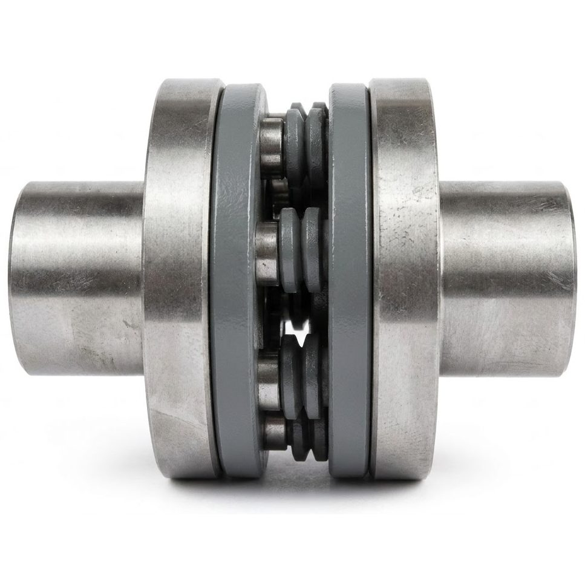
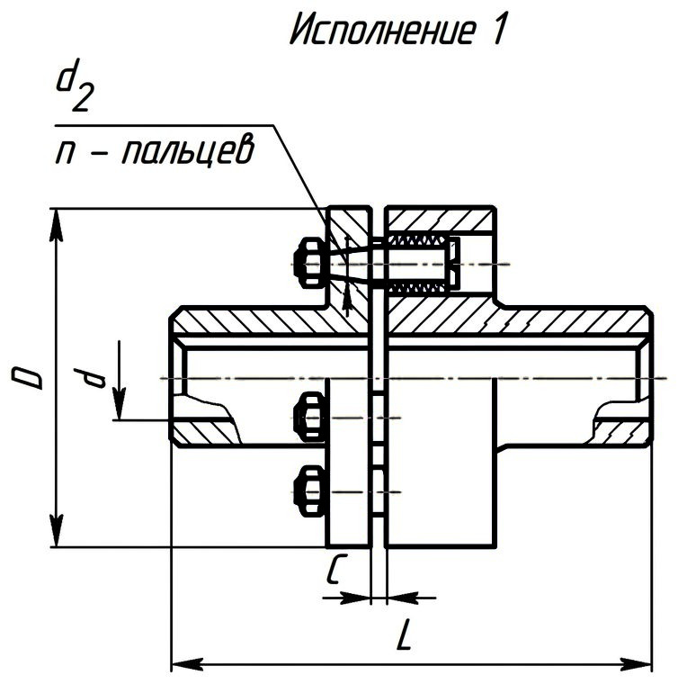
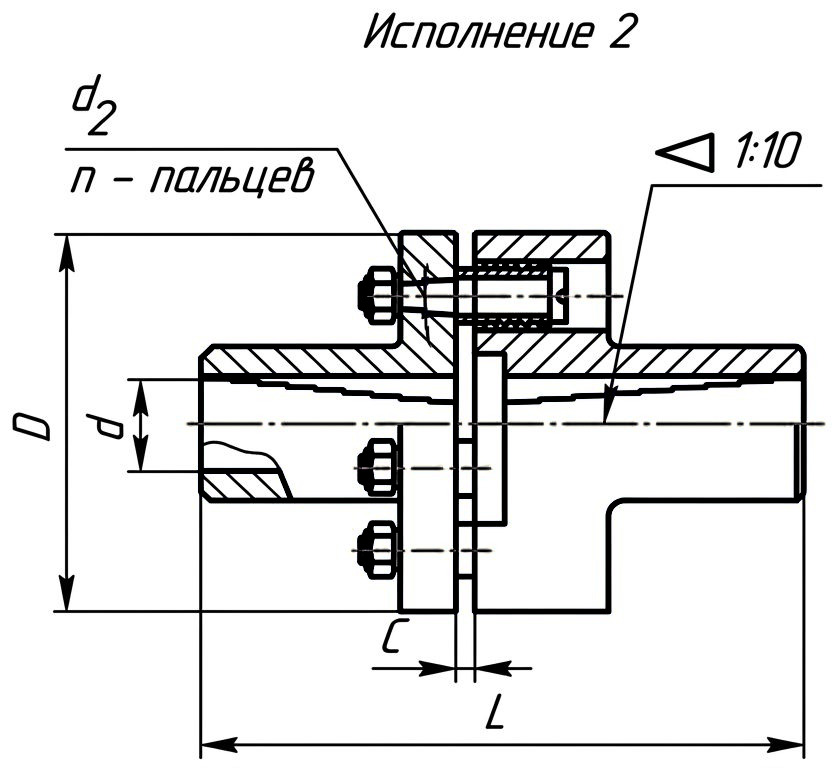
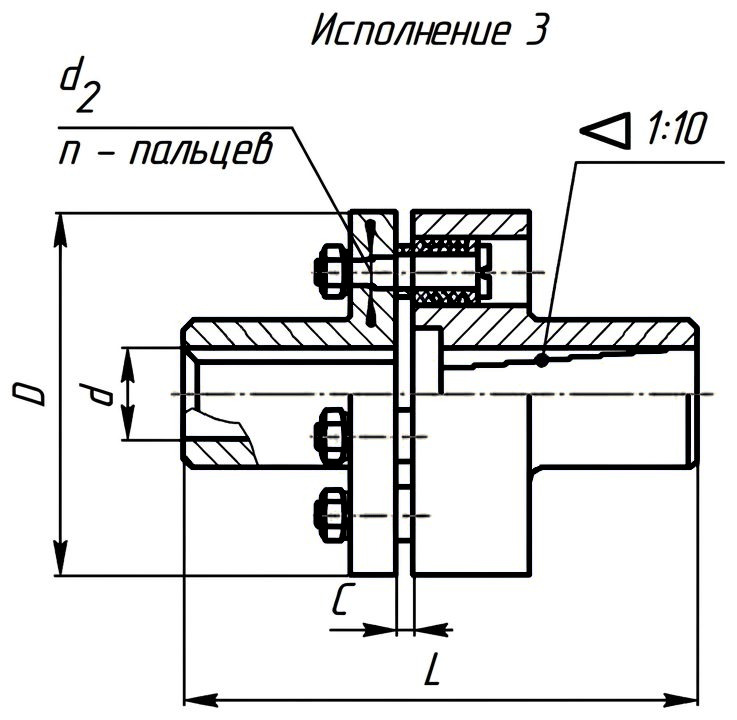
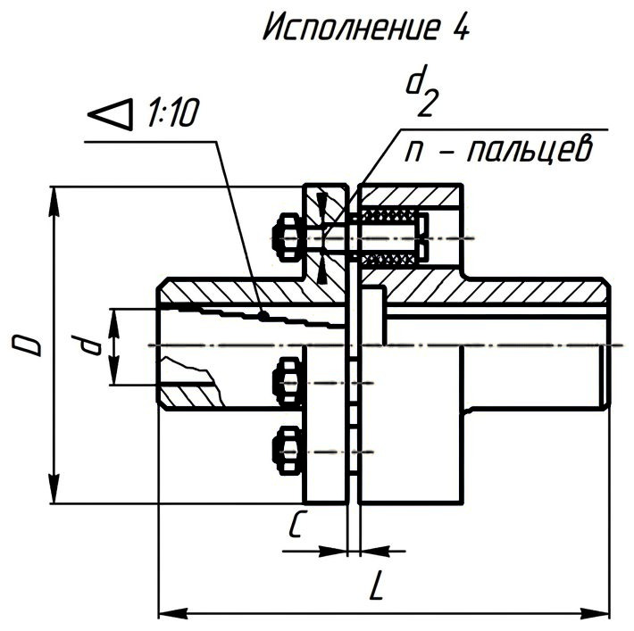

Позвонить: (4842) 75-75-05
Написать сообщение: m-40@inbox.ru
Муфты МУВП → Муфта МУВП-6

Муфта упругая втулочно-пальцевая МУВП-6 предназначена для соединения соосных валов при передаче крутящего момента до 250 Н·м и
уменьшения динамических нагрузок.
В конструкции муфты МУВП-6 имеются стальные пальцы на которые установлены эластичные элементы втулки или кольца МУВП. Кольца применяют в качестве
эквивалента втулки муфты МУВП-6. Кольца и втулки МУВП являются абсолютно взаимозаменяемыми элементами. После посадки на палец, кольца МУВП образуют
цельную конструкцию, по свойствам идентичную втулке МУВП.
Эластичные элементы позволяют компенсировать незначительные осевые 1..5 мм; радиальные 0,2..0,6 мм и угловые до 30' смещения валов.
Упругие втулочно-пальцевые муфты обладают хорошей эластичностью, высокой демпфирующей и электроизоляционной способностью, просты в изготовлении, надежны в работе.
Находят широкое применение, особенно для соединения электродвигателей с исполнительными механизмами при диаметре менее 150 мм.
ООО «ЦКК» изготавливает муфты МУВП-6 в сборе с тормозным шкивом.
На постоянной основе изготавливаем пальцы к муфте МУВП-6. Возможно изготовление нестандартных
пальцев по чертежам заказчика.
Полумуфты изготавливаются в следующих исполнениях:
1 - с цилиндрическими отверстиями для длинных концов валов по ГОСТ 12080-66;
2 - с цилиндрическими отверстиями для коротких концов валов по ГОСТ 12080-66;
3 - с коническими отверстиями для длинных концов валов по ГОСТ 12081-72;
4 - с коническими отверстиями для коротких концов валов по ГОСТ 12081-72.
1 - с цилиндрическими отверстиями для длинных концов валов по ГОСТ 12080-66;
2 - с цилиндрическими отверстиями для коротких концов валов по ГОСТ 12080-66;
3 - с коническими отверстиями для длинных концов валов по ГОСТ 12081-72;
4 - с коническими отверстиями для коротких концов валов по ГОСТ 12081-72.
|
 |
 |
 |
| Исполнение 1 | Исполнение 2 | |
|
 |
 |
|
| Исполнение 3 | Исполнение 4 | |
|
Рисунок 1. Внешний вид и варианты исполнений муфты МУВП-6 |
||
Основные размеры муфты МУВП-6
| ТКР, Н·м | d H8 |
d1 H9 |
d H8 |
d1 H9 |
D, не более | n | L, не более | l1, l2, не более, для исполнений | c-1 | Масса, кг | ||||||
| Ряд 1 | Ряд 2 | 1 | 2 | 3 | 4 | 1 | 2 | 3 | 4 | |||||||
| 250,0 | 32 | - | 140 | 6 | 165 | 121 | 165 | 121 | 80 | 58 | 60 | 38 | 63 | 5,91 | ||
| - | 35 | 6,21 | ||||||||||||||
| 36 | - | 6,25 | ||||||||||||||
| - | 38 | 6,28 | ||||||||||||||
| 40 | - | 225 | 169 | 225 | 169 | 110 | 82 | 85 | 56 | 6,63 | ||||||
| - | 42 | 6,86 | ||||||||||||||
| 45 | - | 6,80 | ||||||||||||||
|
ТКР - Номинальный крутящий момент n - число пальцев N - Частота вращения |
||||||||||||||||
Условия транспортировки и хранения
Транспортировку муфты МУВП-6 рекомендуется производить в разобранном виде. По желанию клиента возможна транспортировка в собранном виде без упаковки
– в этом случае дополнительно обеспечивают защиту деталей муфты от коррозии, ударов и механических повреждений, а также исключить контакт
упругих элементов с агрессивными веществами (такими как масло, бензин, растворители, кислоты, щелочи и т.д.).
Хранить муфту МУВП-6 следует при температуре воздуха не выше 20°С и относительной влажности не более 65%. Рекомендуется хранить муфты на стеллажах,
уложенными в один ряд.
Особенности монтажа и эксплуатации
Для облегчения установки, монтаж ступицы на вал рекомендуется проводить при небольшом нагреве. Осевое крепление ступицы обеспечивают с помощью
установочного винта или упорной шайбы. Эксплуатация муфты МУВП-6 осуществляется в диапазоне температур от -30 до +90°С при допустимом
кратковременном нагревании до +120°С. Верхний рабочий предел температуры ограничен с целью обеспечения длительной безотказной работы
упругих элементов - колец или втулок.
Возможны климатические исполнения - У1, У2, УЗ, УХЛ-4, Т1, Т2, ТЗ и О4 по ГОСТ 15150.
Для максимально эффективной работы муфты и минимального износа требуется соблюдение строгой соосности соединяемых валов.
Возможна длительная работа муфты в течении 24 часов с периодическими остановками.Частота вращения не более величины, указанной в таблице
технических характеристик. Вращение возможно в любую сторону.
Узнать цену на муфту МУВП-6
Вы можете здесь либо по телефону:
(4842) 75-75-05
Хранить муфту МУВП-6 следует при температуре воздуха не выше 20°С и относительной влажности не более 65%. Рекомендуется хранить муфты на стеллажах, уложенными в один ряд.
Особенности монтажа и эксплуатации
Для облегчения установки, монтаж ступицы на вал рекомендуется проводить при небольшом нагреве. Осевое крепление ступицы обеспечивают с помощью
установочного винта или упорной шайбы. Эксплуатация муфты МУВП-6 осуществляется в диапазоне температур от -30 до +90°С при допустимом
кратковременном нагревании до +120°С. Верхний рабочий предел температуры ограничен с целью обеспечения длительной безотказной работы
упругих элементов - колец или втулок.
Возможны климатические исполнения - У1, У2, УЗ, УХЛ-4, Т1, Т2, ТЗ и О4 по ГОСТ 15150.
Для максимально эффективной работы муфты и минимального износа требуется соблюдение строгой соосности соединяемых валов.
Возможна длительная работа муфты в течении 24 часов с периодическими остановками.Частота вращения не более величины, указанной в таблице
технических характеристик. Вращение возможно в любую сторону.
Узнать цену на муфту МУВП-6
Вы можете здесь либо по телефону:
(4842) 75-75-05
Возможны климатические исполнения - У1, У2, УЗ, УХЛ-4, Т1, Т2, ТЗ и О4 по ГОСТ 15150.
Для максимально эффективной работы муфты и минимального износа требуется соблюдение строгой соосности соединяемых валов. Возможна длительная работа муфты в течении 24 часов с периодическими остановками.Частота вращения не более величины, указанной в таблице технических характеристик. Вращение возможно в любую сторону.